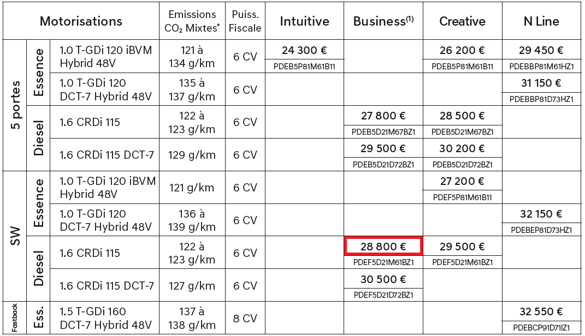

Price list parser’s documentation!
This is the documentation for the Price-list Parser developed by Pareto. Both the project and the documentation are active works-in-progress.
Note
Abandon Hope All Ye Who Continue From Here
The main goal of this project is to take a PDF price list advertising cars, and determine which cars are being sold, and for what price. This includes finding tables with the relevant data, understanding different table format, extracting different fields (engine, fuel, price, etc.) and matching this data to the database.
An example of a price-list table with one cell highlighted:
{kind=link}
Data found for the car represented by the highlighted cell:
{
'model_generations__model_generation__model__super_model__name': 'i30',
'model_generations__model_generation__model__name': 'sw',
'versions__version_name': 'Business',
'engine_combinations__availability__price_gross': 28800.0,
'engine_combinations__engine__name': 'crdi',
'engine_combinations__transmission__type': 'manual',
'engine_combinations__drivetrain__type': 'fwd',
'engine_combinations__engine__power_main_kw': 84.58227,
'engine_combinations__engine__fuel_type': 'diesel',
'engine_combinations__engine__id': 1234,
'engine_combinations__trafsnsmission__id': 42,
'engine_combinations__drivetrain__id': 13,
}
Structure
In section Overview we give an overview of the flow of data and the high level description of its parts, together with a graph of functions appearing in each part.
In section Function documentation we provide description of each individual function, and some additional insights for particular files.
Note
This project also covers other functionalities, such as parsing technical details, or finding equipment. But since these parts are considered trade-secrets, they will not be documented. Just kidding, we are lazy.